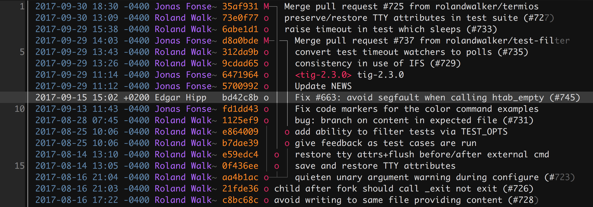

本文主要用來記錄如何在不使用 root 權限的前提下，在自己的家目錄裡安裝 GNU Ncurses 函式並編譯 Tig 指令工具，讓編譯好的 Tig 指令能夠正常顯示中文。
Tig: Text-mode interface for Git
Tig 是個非常實用的 command line 工具，它提供一個 Text-mode Interface (TUI) 讓你能夠在 Terminal 裡透過類似 GUI 的介面進行操作與瀏覽 Git Repository，安裝方式在官方文件裡寫得很清楚也很簡單，但是當你沒有 root 權限去使用 apt 之類的套件管理工具時就變得相對麻煩，不僅需要下載 Tig 原始碼來重新編譯為指令，且編譯環境還必須事先安裝好 GNU Ncurses 函式庫，才能讓編譯好的 Tig 指令支援正常顯示中文！
而不幸的是，我公司的開發環境裡沒有安裝 GNU Ncurses 函式庫，導致編譯出來的 Tig 指令是無法正常顯示中文的，加上 Tig 官方安裝文件裡僅提供如何在自己家目錄內編譯 Tig 指令，並不包含 GNU Ncurses 的安裝方式，令我數次放棄在自己家目錄安裝新版 Tig 想法，幸好前陣子再次研究後有找到在自己家目錄安裝 GNU Ncurses 函式庫的方法，便特地整理成一篇筆記方便日後查閱。
Tig 其實是將 Git 名稱反過來作為它的命名！
為什麼需要手動編譯與安裝 Tig 在自己的家目錄？
記得最初在學習使用 Git 版本控制工具時，是直接在 Terminal 裡面學習操作 Git command ，但是對於 Git 初學者來說，在 Terminal 內操作 git log 指令瀏覽 commit history 不是太友善，光是查詢 git log 指令能配合哪些 flags 顯示各種資訊與不同格式，不僅令人苦惱還需要不少時間才能記住指令，幸好當時的前輩特地教我使用這套 Tig 輔助工具，讓當時學習 Git 的我覺得輕鬆不少。
由於 Tig 的方便性，即使我已經在 .gitconfig 裡面設定十多個 git log aliase 也不太常用，至今仍不熟悉 git log 這個指令…畢竟我平常開發時幾乎都是直接用 Tig 瀏覽 Git Repository！
後來我更特地去研究 Tig 的設定檔 ~/.tigrc 並加入不少個人偏好的設定讓 Tig 畫面看起來更加地順眼舒服，由於我有使用到較新版本才支援的功能，導致我在公司的開發機器裡遇到舊版本無法支援新版本功能的設定錯誤，加上公司開發環境是由 SA 統一管理，各種工具都要請 SA 協助安裝或升級，考量到升級 Tig 版本也有可能導致其他同事原本的設定檔會失效，因此我便決定在自己的家目錄裡自己安裝一個新版本給自己用就好。

如何安裝與編譯 Tig 指令
GNU Ncurses 是一套用來開發 Text-based User Intefaces (TUI) 的函式庫，Tig 使用該函式庫開發出 Text-Mode Interface for Git ，因此在編譯 Tig 之前，必須先安裝好 GNU Ncurses 函式庫，才能讓編譯出來的 Tig 能夠正常運作。
首先從官方網站提供的下載位置取得最新版本的 GNU Ncurses 6.1 函式庫，解壓縮後進行編譯，將它安裝在自己的家目錄裡：
1
2
3
4
5
6
7
8
9
10
11
12
13
14
15
16
17
18
# Download and decompress GNU Ncurses:
$ mkdir -p "$HOME/tmp"
$ cd "$HOME/tmp"
$ wget "https://ftp.gnu.org/pub/gnu/ncurses/ncurses-6.1.tar.gz"
$ tar xzf "ncurses-6.1.tar.gz"
$ cd "ncurses-6.1"
# Configure, compile and install Ncurses:
$ mkdir -p "$HOME/opt"
$ ./configure --prefix="$HOME/opt/ncurses"
$ make
$ make install
# Verify the installation:
$ ls -al "$HOME/opt/ncurses"
# Clean unused files:
$ rm -rf "$HOME/tmp/ncurses-6.1" "$HOME/tmp/ncurses-6.1.tar.gz"
安裝好 GNU Ncurses 之後，接著根據 Tig 官方安裝手冊先下載原始碼並編譯與安裝即可，這部份需要設定 LDFLAGS 與 CPPFLAGS 使用你家目錄裡的 GNU Ncurses 函式庫去編譯 Tig ，最後安裝到你指定的 prefix 位置：
1
2
3
4
5
6
7
8
9
10
11
12
13
14
15
16
17
18
19
20
# Download source code from GitHub:
$ cd "$HOME/tmp"
$ git clone "git@github.com:jonas/tig.git"
$ cd "tig"
# Choose a stable version you want:
$ git fetch --all
$ git checkout "tig-2.4.1"
# Configure, compile and install:
$ make configure
$ ./configure LDFLAGS="-L$HOME/opt/ncurses/lib" CPPFLAGS="-I$HOME/opt/ncurses/include"
$ make prefix="$HOME/opt/tig"
$ make install prefix="$HOME/opt/tig"
# Verify the installation:
$ ls -al "$HOME/opt/tig"
# Clean unused files:
$ rm -rf "$HOME/tmp/tig"
最後別忘記要將 tig 指令加入你的 $PATH 環境變數裡就能開始使用囉：
1
2
3
4
5
6
# Export $HOME/opt/tig/bin into $PATH in .bashrc
$ vim $HOME/.bashrc
export PATH="$HOME/opt/tig/bin:$PATH"
# Copy $HOME/opt/tig/etc/tigrc to $HOME/.tigrc if it not exists:
$ test -f "$HOME/.tigrc" || cp "$HOME/opt/tig/etc/tigrc" "$HOME/.tigrc"
References: